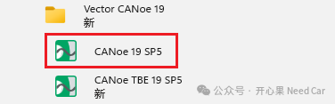
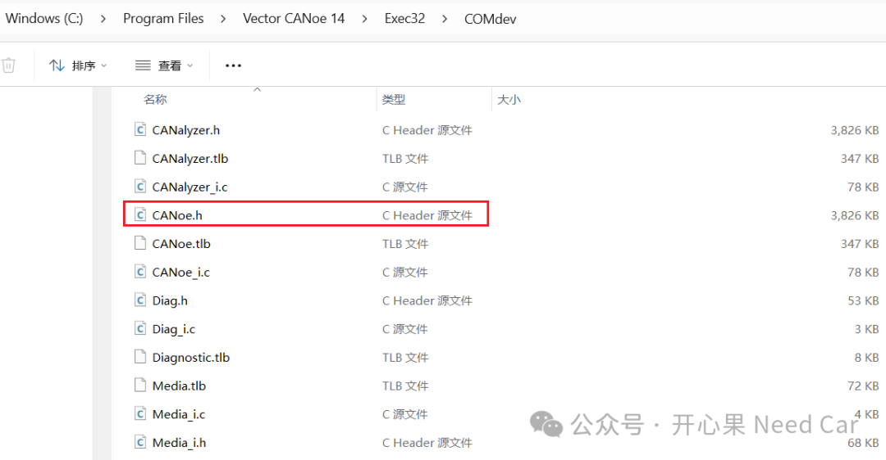
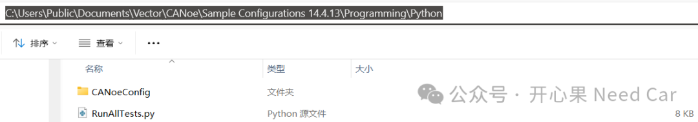
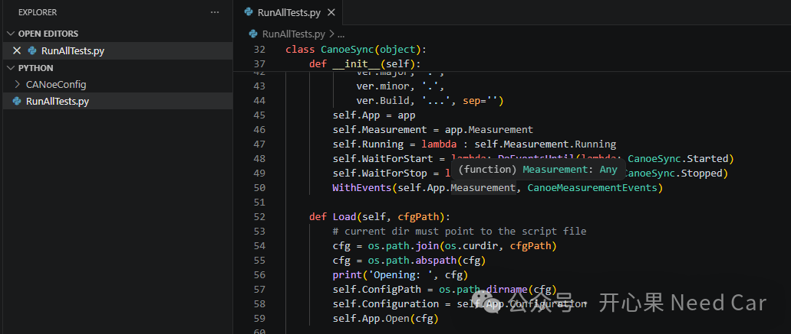
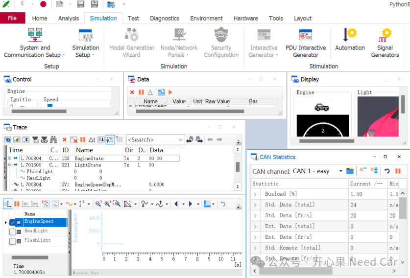

开心果 Need Car · 2026-05-11T06:22:00+08:00 · 微信原文
对于开发或者测试的小伙伴来说，Python因其开源、丰富的库资源等优势，在实际的工程应用中，工程师们往往对其青睐有加。CANoe可以通过 COM（Component Object Model）接口提供自动化控制能力。如此，可以使用COM 调用的编程语言（比如：Python），进行远程控制CANoe的各种功能。整体架构如下：
Python└─ win32com.client└─ CANoe.Application (COM)├─ Configuration├─ Measurement├─ System├─ TestModules / TestConfigurations└─ …
Python 做的事情本质是：通过COM调用CANoe对象树中的方法和属性。
一、COM基础
那么，什么是 COM？为什么 Python 可以控制 CANoe？
COM 的全称是 Component Object Model（组件对象模型），可以把它简单理解成：Windows 平台上，不同软件之间“互相调用功能”的一种统一规则。
COM并不会规定一个软件内部要怎么写代码，而是定义了一套对象和接口的规范。只要软件按照这套规范对外“暴露”功能，其他软件就可以通过 COM来调用这些功能。
在 COM 的世界里，有几个核心概念：
组件（Component）
可以理解为一个对外提供功能的“模块”，比如“打开配置”“启动测量”“运行测试”等。
接口（Interface）
组件不会直接把内部实现暴露出来，而是通过接口提供功能。其他程序只需要知道“接口怎么用”，不需要关心内部是怎么实现的。
服务端（COM Server）和客户端（COM Client）
提供功能的一方，叫 COM Server；使用功能的一方，叫 COM Client。不同的软件只要遵循 COM 规则，就能像“插件”一样互相配合工作。
二、环境准备（非常重要，新手最容易踩坑）
CANoe 版本与 License必须是 CANoe DE (Development Environment)， TBE / Runtime Licence 通常不支持完整 Automation。如果使用的CANoe软件是新版本，注意区分DE和TBE版本，示意如下：

提示：本文基于CANoe 14版本讨论
Python 是如何调用 CANoe 的？Python本身并不直接支持COM，但 Windows上有一个非常常用的第三方库（pywin32）。pywin32 做的事情是帮 Python 封装 Windows API，其中就包括 COM 相关的能力。在 pywin32 中，和 COM 最相关的模块是：win32com.client。
在使用 CANoe Automation 时：
CANoe → 作为COM Server
Python 脚本 → 作为 COM Client
Python 通过 win32com.client.Dispatch("CANoe.Application")就可以获取到 CANoe 的顶层对象，然后一步步访问 CANoe 提供的各种功能。因此，在后续所有使用 Python 控制 CANoe 的脚本中，都必须导入 win32com.client。使用pip安装 pywin32，如下所示：
pip install pywin32注意：CANoe 是 64-bit ，对应的Python 必须是 64-bit。
（一）CANoe COM Server的注册
在安装完成 CANoe 后，CANoe 会自动把自己注册为一个COM Server，这样，其他程序（比如 Python、C#、VB）就可以通过 COM 接口来远程控制 CANoe。操作包括：
打开 CANoe 配置（.cfg）
启动 / 停止 Measurement
运行 Test Configuration
获取测试结果
......
这些操作，本质上都是在调用 CANoe 提供的 COM 接口。如果需要手动重新注册 CANoe 的 COM 组件，可以在 CANoe 安装目录中找到注册工具，具体路径示意如下：
C:\Program Files\Vector CANoe XX\Exec64\RegisterComponents.exe双击运行即可完成 COM 组件的注册。
（二）CANoe功能接口查找
COM Object Hierarchy（对象层级结构）可以帮助我们快速找到 CANoe 中提供的各种功能接口，例如：测量控制、系统变量、测试相关对象等。不过，对象层级图只能告诉我们“功能在哪里”，却无法反映这些对象之间具体的继承关系和接口定义。要想更深入地理解某个功能是由哪个对象实现、对象之间是如何继承或扩展的，就需要进一步查看 CANoe 的 Type Library（类型库）。类型库中包含了 CANoe 所有 COM 接口的详细定义，例如：接口名称、属性、方法以及继承关系等，是理解 Automation API 的重要参考资料。
在 CANoe 的安装目录下（默认路径为）：C:\Program Files\Vector CANoe 14。其子目录 Exec32\COMdev（或新版本中对应的 Exec64 目录）中，存放了用于注册 CANoe COM 组件的类型库文件。其中最典型的就是 CANoe.h 头文件，该文件完整描述了 CANoe 对外暴露的 COM 接口结构，如下图所示：

（三）Demo路径
CANoe对应的Python路径示例如下所示：
C:\Users\Public\Documents\Vector\CANoe\Sample Configurations 14.4.13\Programming\PythonCANoe对应的Python Demo路径示例：

三、运行Demo运行
可以尝试运行CANoe自带的Demo，示意如下:

运行界面如下所示：

参考资料：
1.file:///C:/Program%20Files/Vector%20CANoe%2014/Help01/CANoeCANalyzerHTML5/CANoeCANalyzer.htm#Topics/COMInterface/COMObjectHierarchy.htm?Highlight=COM%20Object%20Hierarchy
2.https://www.cnblogs.com/polelink/p/15744277.html
往期精彩回顾